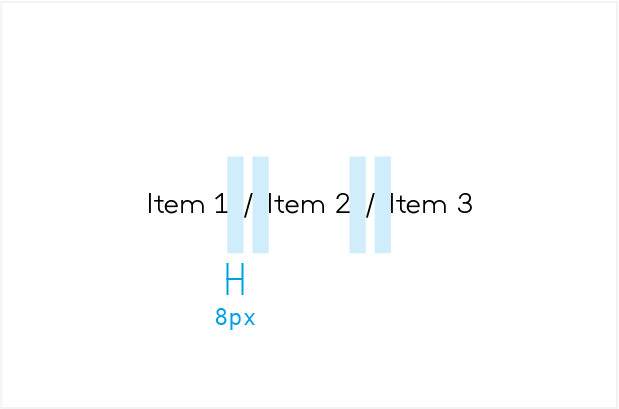

Componentes
Breadcrumb
Permite a los usuarios ver rápidamente su ubicación dentro de una ruta de navegación y pasar a un nivel principal. Se debe poder hacer clic en cada nivel de la ruta.
HTML
<ol class="c-mngBreadCrumb">
<li class="c-mngBreadCrumb__item"><a class="c-mngLink" href="#">Books</a></li>
<li class="c-mngBreadCrumb__item"><a class="c-mngLink" href="#">Science Fiction</a></li>
<li class="c-mngBreadCrumb__item"><a class="c-mngLink" href="#">Award Winners</a></li>
</ol>
Desktop - Tablet
- 
Recomendaciones generales
-
Usar breadcrumbs cuando se diseñen sitios web que tengan 3 o más niveles de profundidad.
-
El breadcrumb no debe reemplazar la navegación primaria.
-
Puede aparecer un breadcrumb para mostrar que el usuario solo tiene un nivel de profundidad.
-
Los links de breadcrumb, independientes, actúan como si fuera un botón Atrás
-
Se debe mostrar la jerarquía, no el historial.
-
No usar breadcrumb si se lleva al usuario a través de un proceso de varios pasos.
Recomendaciones
CorrectoColocar siempre los breadcrumb en la parte superior de la página.
IncorrectoNo se pueden colocar bajo ningún concepto en otro lugar que no sea en la parte superior.
CorrectoMantener los títulos de breadcrumbs cortos y descriptivos.
Incorrecto
CorrectoMostrar la página actual, pero no enlazarla a ella.
IncorrectoLa página actual no es clicable.